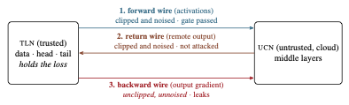
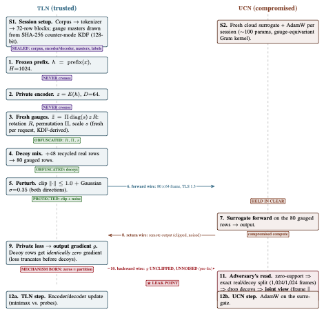

We present a systems-security case study of a two-node split-LLM training system whose privacy evaluation passed while leaving an observable channel untested. The Trusted Local Node (tln) sends protected activations to the Untrusted Cloud Node (ucn), the ucn returns its output, and tln, holding the private loss, returns the output gradient. The frame the ucn receives mixes real rows with decoys, and the loss ignores the decoys. Their gradients are exactly zero, so the pattern of zeros reveals which rows were real.
We measure it with a protocol fixed in advance: a leak injected at known strength to prove the instrument can see one, a shuffled-label control to prove it does not report absent leaks, and a threshold set before the runs. Across nine seeds, the zeros identified the real rows on every frame, 4,096 of 4,096 per run. An attack on the frame contents recovered about one extra token per hundred over a constant-guess baseline ( to percentage points); the shuffled controls recovered nothing.
A second set of runs repeated this on a configuration that keeps model quality within budget, so the finding is not confined to a setting nobody would deploy. On both datasets, every such run passed the forward-channel privacy check and the quality check, yet failed that same check once the returned gradient was included. Clipping and noising each row of the gradient closed the leak for about nats of held-out cross-entropy. The system is not thereby safe: five classes of attack, including those accumulating observations across training steps, were never measured.
Split learning lets a data owner rent cloud compute for training without sending raw examples: the trusted side sends activations and, because it alone holds the private loss, returns the output gradients the untrusted side needs to train. The privacy claim of such a system is that the cloud cannot read the training data. The claim rests on an evaluation, and the evaluation rests on an instrument.
The instrument examined here failed silently. The original evaluation of this two-node split-LLM system instrumented the forward wire, the activations sent to the cloud, and passed its privacy gate. The backward wire, which carries the output gradient the trusted side returns to the cloud, was never declared a privacy surface. In this implementation, excluding the decoy rows from the private loss makes their returned gradients identically zero; that zero-support construction is an implementation and system-design defect. The false assurance has a distinct, more general evaluation cause: the observable gradient channel was outside the declared adversary view, so the gate never tested it. This paper is therefore a systems-security case study with a calibrated protocol applied to one system, not a general methodology paper. Its contribution is a verified diagnosis of that case and a channel-explicit evaluation, positioned against three recent split-LLM evaluations, attack and defence alike (Section 7).
Separating the real rows from the decoys matters because the decoys exist precisely to hide which rows carry the private loss. Exact gradient support lets the cloud discard all 48 decoys and isolate the 32 loss-bearing rows before any content attack, collapsing the anonymity set that padding was meant to create. This is a structural metadata disclosure, not text reconstruction; the content evidence is separately bounded to the implemented frequent-token probe.
Section 2 defines the system and its declared threat surface. Section 3 lays out the evaluation protocol, and Section 4 calibrates the instrument against injected leaks. Section 5 reports the structural disclosure, its replication, and the mitigation runs; Section 6 reports how the signal converts to a token advantage with depth, width, and budget. Section 7 audits three external evaluations and places the work against the DP-auditing and split-LLM literature. Section 8 records scope, limitations, and the verification trail.
Two cooperating nodes train one LLM. We refer to them throughout by their roles: the Trusted Local Node (tln) holds the data and the embedding head, and the Untrusted Cloud Node (ucn) holds a middle stack of transformer layers. For each training frame, tln sends a protected latent (the forward wire); ucn trains its stack and returns its output; tln, which alone holds the private loss, scores that loss and sends the output gradient back to ucn (the backward wire). Both tensors are held by the untrusted node in the clear.
The defence on the wire is a latent-space bottleneck at width , a per-request rotation and permutation, decoy rows mixed among the real ones, and boundary clipping and noise. Each 80-row frame carries 32 real rows and 48 decoys. The implementation and the artefacts call these decoys chaff, after the radar countermeasure, and we use the two words interchangeably. The original evaluation declared the forward wire as the privacy surface, instrumented it, and passed its gate. The backward wire was outside the declared adversary view.
Table 1 sets out the evaluated configuration together with the replication and mitigation runs.
| field | evaluated setup |
|---|---|
| model and runtime | Qwen3-0.6B; Transformers 5.13.0 runtime;
exact weights SHA-256
f47f71177f32bcd101b7573ec9171e6a57f4f4d31148d38e382306f42996874b |
| topology | Main configuration and replication runs: split after layer 14, resume at 26 (11 delegated layers). Mitigation runs: split 21/26 (4 delegated layers). |
| corpus and implemented split | WikiText-2; corpus SHA-256
78b6bfb90cfd718f0c27d42b1fd2231b139d1dda75d7d796e6a603b2e5cd7efe.
The runner tokenizes the flat corpus into disjoint, sequential
fixed-width blocks, then slices train followed by evaluation; this is
not a document-level split. |
| frame and latent | real 48 decoy 80 rows per frame; . |
| boundary protection | Forward and returned activations: per-row and Gaussian . Main configuration and replication runs, outbound gradient: open. Mitigation outbound gradient: and Gaussian . |
| known-plaintext latent probe | coordinate_plus_invariants,
invariant_only, and invariant_graph; 20
epochs; batch 512; 3 restarts. |
| captured frames per run | Main configuration and replication runs: 4,096 2,048 probe-train 2,048 evaluation. Mitigation runs: 1,024 512 probe-train 512 evaluation. |
| seed groups | –47 exploratory; 48–50 replication; 51–53 mitigation. |
| decision thresholds | Privacy: gate statistic pp fails. Utility: held-out cross-entropy increase nats passes. |
| inference | Inferential unit: one independent training seed. Within-run uncertainty is frame-clustered. |
The threat model is a fully compromised remote node: ucn can read every message, state update, and cross-step observation on its own side. Prior split-learning work demonstrates passive reconstruction and label leakage as well as active backward-signal manipulation . Accordingly, the declared adversary view has multiple channels, and a privacy claim is only as strong as the enumeration and testing of those channels. Figure 1 depicts the protocol’s three hops, Figure 2 expands one frame into its per-step anatomy, and Table [tab:trust] records the trust split at the evaluated operating point.


| TLN (trusted) keeps | UCN (compromised) sees/holds |
|---|---|
| Private corpus; token IDs; plaintext I/O | Gauged D=64 frame rows only (80 rows/frame: 32 real + 48 decoy) |
| Frozen LM prefix, embedding, LM tail | A ~100-parameter gauge-equivariant surrogate it trains itself |
| Private encoder H→D=64 and decoder D→H weights | Unclipped, unnoised D-width output gradients (the omitted channel) |
| Per-request gauge masters (rotation, permutation, scale; SHA-256 counter-mode, 128-bit) | Protocol metadata: frame sizes, timing, session shape digests |
| Honest evaluation labels; session keys; optimiser state for trusted parts | TLS 1.3 endpoints and ciphertext (pinned CA) |
| Never crosses: H-width activations, canonical coordinates, token order, token scale, plaintext tokens. | |
Four project terms appear throughout without prior-art homes, so we define them once here (no citations; they are constructs of this system, not borrowed results). A seed is the random seed initialising one training run and, through the KDF, every per-request gauge draw — the unit of independent replication. A cell is one complete experiment — a defence configuration, a seed, and a training budget, run end-to-end and then attacked and scored. A battery is a predeclared set of attacks scored as one sweep: the frozen nine-arm probe family (three model classes three restarts) or the compromise-fraction sweep. A surrogate is the small gauge-equivariant module ucn trains in place of the real middle layers (100–161 parameters) — a stand-in that computes on gauged frames without ever learning the gauges. Likewise: the gate is the predeclared decision threshold, the floor is the reading of a matched no-attack control, an arm is one scored attacker instance, chaff is the recycled real decoy rows, and a gauge is one fresh per-request randomisation (rotation, permutation, or scale).
The gap this paper addresses is not discovery of gradient leakage or a bidirectional attack surface: both are established in gradient-inversion and split-learning work . The gap is a concrete evaluation returning a pass without testing whether its metrics can detect a known leak on every declared channel. We instantiate three established audit disciplines for that setting.
The evaluation must enumerate all channels the adversary observes (forward, backward, membership, timing) before it measures any of them. A channel absent from the declared view is exempt from the gate by construction; the leak found here lived exactly in that exemption. Table 2 records the enumeration and its current status. Its artefact sources and verification procedures are indexed in Appendix 10.
| family | applicable metrics | positive control | status |
|---|---|---|---|
forward_only |
token_top1,
rare_token_top1, token_cross_entropy |
injected leak on the forward wire; codeword injection | measured |
gradient_only |
token_top1,
rare_token_top1, token_cross_entropy |
injected_leak on the backward wire | measured |
joint_forward_gradient |
token_top1 |
scaled joint concatenation (the exploratory frequent-token gradient result) | measured |
accumulated_history |
token_top1 |
none | unmeasured (no positive control) |
stateful_remote_state |
token_top1 |
none | unmeasured (no positive control) |
timing_metadata |
— | none | unmeasured (no applicable metric) |
active_perturbation |
token_cross_entropy |
amplitude sweep | constructible, unexecuted |
membership_property |
— | none | unmeasured (no applicable metric) |
response_side |
— | none | unmeasured (no applicable metric) |
A metric certifies the absence of a leak only if it detects a leak injected on purpose. Section 4 measures each metric’s detection threshold with a controlled dose–response sweep. A metric that has not been calibrated cannot stand between a privacy claim and a passing verdict. Planted canaries and attack-based privacy audits provide the methodological precedent ; our adaptation makes the dose and decision channel- and metric-specific.
Every attack result in this paper is a top-1 token accuracy: the share of evaluation tokens the attacker’s probe names correctly. We report it not as a raw accuracy but as the gap, in percentage points (pp), between the probe and a constant baseline that always guesses the single most frequent token in the evaluation set. That baseline sits near 5 to 6% for this model and corpus, so an effect of pp means the attacker recovers roughly one extra token per hundred, about a sixth more than guessing alone would give. The gate is set at pp, and the effects measured here fall between about and pp.
Let be the nine predeclared probe arms (three probe variants, each scored at three restarts; Table 1), the Bonferroni-adjusted Wilson upper-95 accuracy for arm , and the point accuracy of the constant baseline, which always predicts the most frequent evaluation token. The historical gate statistic is Thus the constant baseline is subtracted after the Wilson bound is formed; pp fails the gate. For frame , define the paired difference For a real arm and its shuffled-label negative control , respectively, is the real-arm paired effect; is the same paired effect for the shuffled-label negative control. is a false-positive check and is not subtracted inside . Within-run uncertainty bootstraps frames; reported across-seed contrasts, including , use a hierarchical bootstrap over seeds (outer) and frames (inner).
Three verdict terms recur throughout, and we fix them here. A result is detected when its lower bootstrap bound is positive or when exact support evidence establishes it; an arm is at floor when that bound includes zero, so the arm is indistinguishable from its constant baseline; and an arm breaks the gate when, and only when, pp under the Bonferroni–Wilson rule of Equation (1). “Detected” and “breaks the gate” are not synonyms: a paired effect can be detected well below the gate, and the gate can break on an upper bound whose point effect is smaller. We also call one (configuration, seed) run a cell, and one capture run’s serialised frames plus its metadata manifest a bundle.
-style row-independent statistics remain only for comparability with previously reported results of this system. Calibrated reference distributions and explicit operating points are established in membership-inference evaluation ; the shuffled-label negative control is their channel-specific counterpart here.
Calibration is per metric: thresholds are set only after each metric’s detection curve is measured. The sweep injects a known token leak at controlled dose (coverage amplitude) and reads where each metric detects it.
Figure 3 and Table 3 show the
dose–response curves. token_top1 has a sharp onset between
coverage 0.04 and 0.06, steepening through 0.10.
rare_token_top1 is the most sensitive, first responding at
coverage 0.04 and reaching full recovery at coverage 1.0.
token_cross_entropy is dose-insensitive until the injected
leak dominates. membership_auc is insensitive over the
tested low- and moderate-dose region
(AUC
spans
–
across the full sweep), because the injected leak is a token-identity
signal, not a membership signal; the metric was subsequently falsified
as a channel and retained as a probe-generalisation diagnostic only.
The curves disagree, consistent with broader evidence that reconstruction metrics need not agree on privacy risk , so no single threshold fits all metrics. The thresholds (Table 4) are set per metric, and they are budget- and frame-invariant along the remaining sweep axes. Calibration changed how the decision is interpreted, not the gate formula: three cells later shown to be degenerate (arm identical to the constant baseline row-for-row) had pinned the statistical floor, and the sweep measures that false-negative region while preserving the historical pp Bonferroni–Wilson rule. The frequent-token effect is detected on every seed ( from to pp, pp); explicit gate breaks are reported only where the Bonferroni–Wilson column exceeds pp (Section 5).
rare_token_top1 is most sensitive;
token_cross_entropy barely moves until the leak dominates;
membership_auc does not detect the low-dose token signal
because the injection is not a membership signal. A single calibration
run across 19 doses.| metric | cov 0.02 | 0.04 | 0.06 | 0.10 | 0.30 | 1.00 |
|---|---|---|---|---|---|---|
token_top1 (pp) |
0.35 | 0.35 | 0.98 | 4.19 | 22.51 | 94.88 |
rare_token_top1 (pp) |
0.08 | 0.32 | 0.67 | 1.97 | 14.18 | 100.0 |
token_cross_entropy |
1.114 | 1.114 | 1.114 | 1.115 | 1.130 | 7.025 |
membership_auc
(AUC) |
0.093 | 0.093 | 0.095 | 0.095 | 0.096 | — |
| metric | threshold set in advance | basis |
|---|---|---|
token_top1 |
gate: Bonferroni upper-95 excess pp | first displayed gate break at cov. 0.06 |
rare_token_top1 |
paired effect pp; report raw recovery | earliest subthreshold movement at cov. 0.04 |
token_cross_entropy |
none set; read arm minus shuffled-label negative control (never raw) | a confidently-wrong negative control inverts raw CE; no numerical gate |
membership_auc |
none (diagnostic only) | falsified as a channel; constant baseline vacuous |
A floor reading is interpretable only if the same probe succeeds on a representation-matched undefended control. The isolation-audit bundles do not provide that control because their naked boundary is a different representation and the probe remained near floor there. For the split-14 claims, the positive control therefore uses the split-14 naked capture and a probe built to detect it: a four-layer, eight-head Transformer encoder trained 50 epochs to map each released latent row back to its token . Appendix 10 indexes the associated artefacts.
| boundary | Wilson upper-95 acc. | constant baseline | excess | note |
|---|---|---|---|---|
| naked (, no defence) | 28.54% | 4.35% | pp | breaks |
| defended (, noise, decoys) | 5.56% | 5.27% | pp | at floor |
| defended (, dimension-matched) | 5.56% | 5.29% | pp | at floor |
The naked break selects the best epoch on the evaluation set, so pp is a sensitivity demonstration, not a primary leak estimate; and the defended frame carries 80 rows against the naked frame’s 32, matching the study’s evaluation convention. What the contrast establishes is narrow and load-bearing: an attacker architecture proven sensitive to the representation reads nothing through the defence, while an attacker family that could not read even the naked boundary could never have shown it. Boundary-specificity is measured: re-run on the packaged isolation-audit bundle, the same probe reads the naked boundary at floor as well ( pp, its shuffled-label negative control at ). This is exactly why a positive control must be representation-matched to the cell under test, and why the split-14 capture above is the control for the split-14 claims.
Table 6 summarises the main configuration and the result categories developed in this section; availability and verification details are indexed in Appendix 10.
| result category | result | interpretation |
|---|---|---|
| forward wire | gate passed | the original instrument’s only channel |
| backward wire | leaks structurally | ,096/4,096 frames; row agreement 1.000, on each of nine seeds |
| frequent-token content effect | pooled over the nine verified seeds: pp, 95% interval | negative control at floor on every seed; per-seed values in Table 7 |
| nine audit cells | effect detected at 12 and 11 delegated layers, at floor at 8 and 6; detected at and , at floor at ; 2.5 more exposure does not amplify | one run each (seed 42); partition exact at every depth |
| dose–response calibration | token_top1 onset
0.04–0.06;
rare_token_top1 at 0.04; CE flat until
dominant; membership_auc flat and dose-insensitive |
per-metric thresholds set in advance |
| internal scorer reimplementation | all nine cells pp | internal check (Appendix 10) |
| mitigation runs | joint view breaks the gate on defended cells across two datasets; gradient clipping and Gaussian noise suppress the scored probes for a held-out cost of nats | under the fixed protocol; four-layer topology |
A decoy row’s gradient is identically zero, because the trusted-side loss truncates before the decoys. With the gradient unprotected, the zero-support pattern of each returned gradient frame exactly repeats the split between real rows and decoys. On every one of 4,096 frames, on every seed, the match is exact: 4,096/4,096 frames; row-level agreement 1.000. The corresponding per-seed artefacts are indexed in Appendix 10.
The result has three claim levels.
Gradient support discloses exactly which rows are real: the cloud can separate every loss-bearing row from every decoy row in every evaluated frame. This is the disclosure the backward wire is uniquely responsible for.
Conditioned on that structural signal, the pre-set frequent-token probe has a modest paired effect. The gradient’s contribution here is small: comparing the gradient and forward arms of Table 7 seed by seed, the gradient’s margin over the oracle-partitioned forward frame is at most pp on five of the six exploratory seeds ( to on four of them), and reaches pp only on seed 42. The content an attacker reads therefore sits largely in the forward frame, and what the backward wire supplies is the partition that makes the frame readable, which is claim (i), not additional content. This probe result is content inference; it is not evidence of transcript or sequence reconstruction.
The experiments do not establish rare-token recovery, sequence reconstruction, or held-out-text reconstruction. Those claims require different emitters and controls and remain outside the measured result.
The cycle in which this happens is Figure 2, steps 9 to 11. Table 7 reports the exploratory and replication runs.
| seed | gradient arm (pp) | forward arm (pp) | negative control (pp) | frames exact | verdict |
|---|---|---|---|---|---|
| 42 | 4,096/4,096 | detected | |||
| 43 | 4,096/4,096 | detected | |||
| 44 | 4,096/4,096 | detected | |||
| 45 | 4,096/4,096 | detected | |||
| 46 | 4,096/4,096 | detected | |||
| 47 | 4,096/4,096 | detected | |||
| mean | 4,096/4,096 | — | |||
| 48 (fixed protocol) | 4,096/4,096 | detected | |||
| 49 (fixed protocol) | 4,096/4,096 | detected | |||
| 50 (fixed protocol) | 4,096/4,096 | detected |
The exact partition and the modest frequent-token paired effect are detected under a shuffled-label negative-control protocol the audited evaluations do not run. It establishes that a gate that never declares the backward channel cannot see the partition signal. The originally published gate would also have passed this cell under its own threshold. The structural disclosure was invisible to it twice over: the channel was never scored, and the floor the threshold was calibrated against was degenerate (Section 4).
The main configuration fails its own utility gate: it protects the data but costs too much model quality to be worth running. That leaves an objection. If the leak only appears in a configuration nobody would deploy, it may not matter. This section answers that objection with a second set of runs on a configuration that does pass both gates, so the leak cannot be dismissed as an artefact of an unusable setting.
These runs use a shallower split, delegating four transformer layers instead of eleven. They were run on three fresh seeds (51 to 53) from the released code, and scored against the thresholds set in advance, so nothing about them was tuned after the fact.
Table 8 reports every run in the mitigation set.
| cell (seed) | utility | forward gate | joint arm (gate) | joint arm (paired effect) | support leak |
|---|---|---|---|---|---|
| defended, gradient open (s51) | 1,024/1,024 | ||||
| defended, gradient open (s52) | 1,024/1,024 | ||||
| defended, gradient open (s53) | 1,024/1,024 | ||||
| defended, gradient clipped and noised (s51) | 0/1,024 | ||||
| defended, gradient clipped and noised (s52) | 0/1,024 | ||||
| defended, gradient clipped and noised (s53) | 0/1,024 | ||||
| public corpus, gradient open (s51) | 1,024/1,024 | ||||
| public corpus, gradient open (s52) | 1,024/1,024 | ||||
| public corpus, gradient open (s53) | 1,024/1,024 | ||||
| naked control (s51–s53) | to | to | — |
(a) The joint-view gate result is not confined to a utility-failing configuration. On all six defended, gradient-open cells (three seeds on each of two datasets) the run passes the forward privacy gate and the utility gate, and the joint view still breaks the pp gate set in advance, while the gradient on its own stays at the level of guessing.
(b) The mitigation removes the zero-support partition signal. With per-row gradient clipping and Gaussian noise, every scored arm sits at floor and the structural partition disclosure is gone: 0/1,024 frames, agreement at the 32/80 base rate. Utility is intact, at a held-out cost of nats.
(c) The naked control restores the signal. The same topology with the defence off reads pp on the joint view, so the defended cells’ near-floor readings reflect the defence rather than a blind instrument. On the forward gate the defended cells sit at floor while the naked cells exceed it by roughly ten pp, separating the two configurations by more than an order of magnitude.
Cross-Gram cancellation does not explain the joint-view result. The forward activation matrix and its returned gradient share the per-request rotation, so their cross-Gram product cancels it. The pre-set probe family did not compute this cross-tensor feature. We implemented it (cosine and scale-keeping forms, with rotation-invariance self-tests) and scored it on every captured cell: it reads at floor everywhere, defended (gate statistic to , paired effect to ) and naked alike (paired effect to ). Under the two implemented emitters, the joint-view effect therefore runs through the concatenated gradient block’s own content, not through the rotation-cancelling cross-term; other cross-tensor attacks remain open.
The effect exists on a second corpus. The main results are on the private WikiText-2 slice. The alternative public WikiText-2 corpus carries the same topology on seeds 51–53 (Table 8), and on two of the three the gradient alone breaks the gate as well ( and ). One additional corpus is a limited robustness check: the effect is observed on both tested datasets, at different magnitudes, which does not establish that the effect is dataset-independent.
Packaged seed-42 rerun. The seed-42 result in Table 7 (, originally served by a pre-existing container) was re-run from packaged code in a clean container in the primary configuration: (upper-95), paired effect , support exact on 4,096/4,096, and the negative control at floor. The result is not confined to that container. Pooling the nine seeds that were run from packaged code (the six exploratory and the three replication runs), a seed-level random-effects estimate puts the frequent-token gradient-arm paired effect at pp, 95% interval (, ). The interval reaches the pp gate, so the pooled content effect is not separable from the gate threshold at this sample size. Three further units from an earlier, unpackaged tree are retained in the committed estimate for continuity with earlier reports; including them gives pp, , but they are not re-derivable from the release and we do not rely on them.
These runs are 2,000-step diagnostics on the 0.6B model, and the clean 40k-step rerun confirms the main configuration still fails its utility gate (, vs on the original cell). The claim that a configuration passes both gates attaches to the four-layer topology, not to the eleven-layer main configuration.
Nine audit cells vary budget, depth, and width (Figure 4; Table [tab:shape]); each cell is a single run on seed 42, so every shape threshold below is a single-seed reading. Within this run the readings were insensitive to budget between 40k and 100k steps. Depth and width thresholds are read on the paired effect, and every cell’s shuffled-label negative control reads at floor.
| axis | steps | gradient arm (pp) | negative control (pp) | verdict | frames |
|---|---|---|---|---|---|
| depth (12 del.) | 2k | +0.4796 | −0.0702 | detected | 512/512 |
| depth (11 del., D=64) | 40k | +0.9302 | −0.0112 | detected | 4,096/4,096 |
| budget | 100k | +0.9066 | −0.0926 | detected | 4,096/4,096 |
| width (D=96) | 10k | +0.8635 | −0.0061 | detected | 4,096/4,096 |
| depth (8 del.) | 2k | −0.4314 | +0.0399 | at floor | 512/512 |
| depth (6 del.) | 2k | −0.2131 | +0.0270 | at floor | 512/512 |
| width (D=128) | 10k | −0.4823 | −0.0153 | at floor | 4,096/4,096 |
| width (D=96) | 10k | −0.0861 | +0.0824 | at floor | 512/512 |
| width (D=128) | 10k | −0.1190 | +0.0702 | at floor | 512/512 |
| (the 512-frame D=96/128 readings are superseded by the 4,096-frame re-runs) | |||||
The split is disclosed on every frame because every decoy gradient is exactly zero; the disclosure is deterministic, not a sampling artefact.
The implemented probe’s paired effect did not increase between the two tested exposure budgets. From 40k to 100k gradient exposure (2.5), the per-row effect changes from to in this run.
The recovered token advantage is detectable at 12 and 11 delegated layers and undetectable at 8 and 6: the gate is bracketed between 8 and 12 on the matched 2k-step ladder, and the 11-layer point is the 40k-step main configuration, where depth is confounded with budget; the ladder’s point estimates are not a monotone dose–response. The paired effect is detected at latent width and , and not at . The partition classification itself is exact at every depth and width (Table [tab:shape]): depth and width affect conversion of the partition into a token advantage for this configuration and attack, not the underlying zero-support signal. Stronger inversion attacks can recover prompts from deep LLM states , so this local transition is not evidence that depth generally provides privacy. Table 9 collects every attack family tried against the system, where each applies in the training cycle, and its outcome.
| attack | step (Fig. 2) | outcome | does it work? |
|---|---|---|---|
| pre-set 9-arm battery on forward frames | 6 | defended floor pp; naked pp | no, against the defence |
| deep-inversion transformer probe | 6 | naked split-14 pp; defended floor at and | no, against the defence |
| zero-support read (no training; just zeros) | 10 | partition exact on every frame, every seed | yes |
| gradient arm alone | 10 | floor on the private corpus (); breaks on 2 of 3 public-corpus seeds () | only on one dataset |
| joint arm (frame gradient) | 610 | breaks the pp gate set in advance on 6 of 6 defended cells () | yes |
| cross-Gram invariant | 610 | floor on every capture (cosine and raw forms) | no; the feature carries nothing |
| vector-matching and nearest-signature attacks | 6 | – and against a constant baseline, i.e. below the no-attack control | no |
| compromise battery (wire capture, decoy identities, gauge compromise, known plaintext) | 6 | flat at/below control on every fraction | no |
| after the mitigation (per-row clip and Gaussian noise) | 10 | all arms at floor (); support ; utility cost nats | no longer |
The audit selected three recent evaluations to span a bidirectional attack, a bidirectional defence, and recent attack-plus-defence work; it is a purposeful sample, not a field survey (Table 10). None of the three combined all three controls.
| system | role | injected calibration | shuffled-label negative control | predeclared gate |
|---|---|---|---|---|
| BiSR | attack | none | none | none |
| DualGuard | defence | none | none | none |
| Prompts to Responses | attack + defence | none | no (unmatched baseline) | none |
BiSR demonstrates backward-channel reconstruction against perturbation defences through comparisons with re-adapted attacks, but does not define an acceptance gate or shuffled-label negative control. DualGuard correctly evaluates forward, backward, and bidirectional attack paths before reporting a worst-case aggregate; its defence comparisons nevertheless do not include an injected detector canary, shuffled-label negative control, or predeclared privacy gate. Thus they do not support the specific calibrated no-leak decision required here; this is a statement about evaluation semantics, not defence efficacy. From Prompts to Responses is forward-only by scope and reports an unmatched random-token baseline in its appendix.
Planted-secret exposure tests and attack-based DP audits establish controlled canaries and statistically valid empirical privacy tests. Randomized multi-canary audits already include explicit null hypotheses and decision rules ; calibrated membership attacks likewise emphasise reference distributions and declared operating points . We adapt them to channel-level split-protocol evaluation and add a coverage–amplitude dose ladder that estimates each metric’s onset before the gate is applied.
The broader lineage already covers honest-but-curious reconstruction , gradient-side label leakage , malicious backward-signal control , and leakage from intermediate training states . SIMBA and VFLAIR-LLM provide modular evaluation substrates; VFLAIR-LLM reports 5 attacks 9 defences. Multi-attack split evaluation and bidirectional threat models are therefore well established. The narrower contribution here is the measured positive-control onset, channel-specific shuffled-label negative control, gate set in advance, and artefact-level traceability in one audited system. Table 11 places this report against those systems on the axes that separate them.
Within our selected 13-paper audit corpus, five works are in-scope split-LLM evaluations and eight are adjacent systems (trusted execution environment partitioning, inference-time obfuscation, on-device key-value cache protection, prompt sanitisation, and incentive design). MIXGUARD tunes adaptive gradient perturbation against a public proxy and reports defence-vs-attack comparisons, rather than detector calibration against a shuffled-label negative control. Forward-only inference frameworks (e.g., ) do not include the training-gradient channel measured here.
| System | Threat model | Covers training? | Privacy evidence | Integrity | Cost |
|---|---|---|---|---|---|
| This work | compromised cloud; 9 declared channels: 3 measured, 1 constructible, 5 declared unmeasured | yes: 2k-step cells, 6 fresh seeds, 2 datasets; 40k leak cells | forward probe at floor on defended cells (conditional: gate fires 6% coverage); joint view breaks the gate on 6/6 cells ( pp) until clipping and noise close it (3/3 at floor) | median 100%/0% (one perturbation class) | WAN |
| AloePri | honest-but-curious | no (inference) | point TTRSRs; VMA 13.5–25% on two models | none | 0% online; 482 min offline at 671B |
| GELO | VRAM-read TEE island | no | p95 cosine/Gram error, no control | scoped out | 20–30% microbenchmark |
| PermLLM | permutation obfuscation | no | broken by the matching family (99% reconstruction) | none | 3 s/token (6B) |
| ObfNet | backend holds obfuscators | no | perceptual (10 volunteers) | none | 0.22–11 ms/sample edge |
| TEE | trust silicon vendor | partial | hardware-rooted attestation | hardware-rooted | 7–20% |
| MPC/HE | semi-honest parties | no | cryptographic by assumption | by construction | – |
| TOPLOC | untrusted provider | no | n/a (integrity only) | hash commits, 100%/0% | 258 B / 32 tokens |
| VFLAIR-LLM | evaluation harness (5 attacks 9 defences) | substrate | shared substrate; its evaluations lack the calibrated null | n/a | harness |
The findings concern one split-training implementation. The main configuration, calibration, and shape analyses (Section 6) use WikiText-2; a second corpus is a three-seed diagnostic robustness check, not evidence of corpus independence. The external evaluation claim is limited to the targeted comparison of three recent works in Table 10.
Five adversarial families are declared unmeasured, not covered: membership/property AUC (needs randomised membership assignment), response-side recovery (no response-side capture), timing metadata (no applicable metric), stateful remote state, and accumulated history. Active perturbation has an applicable calibrated metric but is not executed at the scale of the mitigation runs. The utility side likewise fails on the main configuration ( loss on the original cell, on the clean rerun, both vs the 0.35 gate). The mitigation runs of Section 5.3 answer that directly: the gate breaks on six of six cells that pass both gates. Those cells are 2,000-step diagnostic runs on the 0.6B model, and convergence-scale evidence remains out of scope. Rare-token recovery is exactly zero on the gradient arm under the implemented emitters (the wire arm shows isolated single-row recoveries, 0.015–0.030%). TAG-, LAMP-, FILM-, or DAGER-style sequence reconstruction has not been adapted to this object, a gradient cut at the split boundary rather than a full parameter gradient . We therefore establish frequent-token discrimination plus exact classification of the constructed partition, not reconstruction of held-out text.
Additional negative results illustrate the difficulty of the problem. Rotation alone leaked 18–66% of tokens across three early rotation-only variants; noise strong enough to mask the signal destroyed utility first; longer frames leaked more ( to pp); and a short private phase after public pretraining still leaked ( pp). A Mutual Information Neural Estimator (MINE) reading near zero nats is not a privacy certificate: a finite-sample lower bound cannot upper-bound true mutual information. The same cell that read nats held a detected pp probe effect.
Two bodies of earlier evidence sit outside the argument above and are recorded in the appendices rather than dropped. Appendix 11 names each mechanism of the evaluated defence, its implementation site, and its status. Appendix 12 reports the historical attack batteries against the defended forward cell; they precede the representation-matched positive control of Section 4.2 and are superseded by it as evidence of probe sensitivity.
Held-out cross-entropy is measured on blocks held out within one flattened corpus stream rather than on held-out documents (Table 1), so every held-out decision here (the utility gate, the claim that the four-layer topology passes it, and the nat mitigation cost) is a block-held-out reading, and claims that depend on document independence are out of scope.
On availability: the protocol, metric thresholds, and family map were fixed before the replication and mitigation runs, and those fixed versions are the ones in the artefact release. Committed summaries and code support the displayed calibration and shape results; raw cluster-side prediction tensors are not part of the release. A scorer reimplementation, written internally rather than by an independent group, matched all nine primary seed values to pp; that scorer and its prediction tensors are uncommitted, so the check is recorded but not re-executable. The complete transcript is likewise host-only under the raw-data policy. Appendix 10 gives the result-by-result artefact index, availability boundaries, recorded verification, and documented limitations.
This systems-security case study shows a forward-only evaluation passing while an omitted backward channel revealed which rows were real and which were decoys. The zero-support construction is an implementation and system-design defect; the false pass illustrates the more general evaluation failure mode of omitting an observable channel from the gate. This exact structural metadata disclosure is distinct from the implemented probe’s modest frequent-token paired effect (claim boundaries are recorded in Section 8). On both datasets, all six defended, open-gradient mitigation runs passed the forward privacy and utility gates yet exceeded the privacy gate in the joint view. In the three mitigated runs, per-row gradient clipping plus Gaussian noise removed the zero-support partition signal and suppressed the implemented probes below the gate at a held-out cross-entropy cost of nats.
Controlled injection, a predeclared per-metric gate, and shuffled-label negative-control falsification form the calibrated protocol used to evaluate this case. They are not evidence for a general methodology across independently designed systems. In a targeted comparison of three recent evaluations, none combined all three controls. The evidence shows that a passing verdict is meaningful only for the channels, attacks, and leak magnitudes against which its instrument has been tested.
All paths in this appendix are relative to the artefact release at https://github.com/setloop-io/Privacy-Failure-in-Split-LLM-Training-The-Returned-Gradient-Nullifies-the-Decoys. The index is organised by claim level rather than by directory. A committed summary or manifest supports inspection of the displayed value; “re-derivable” means end-to-end execution from that release alone; availability boundaries are recorded per result below.
The exact real/decoy split is recorded for each seed under |paper-data/collected/diagnostic/e1_reproduction_w12/|. The primary per-seed bundle summary is named |e1_repro_w12_s44_bundles.json| for seed 44, with corresponding files for the other seeds. These committed derived records support the frame and row agreement values; the underlying cluster-side prediction tensors are not committed. The complete verified transcript covers 3 seeds, 30,000 optimiser steps, and 180,636 events in the committed manifest. The hardened verifier and the forward, gradient, and joint-view consumers confirm that all 30,000 training frames carry all four payload directions. Payload-level attacks on the accumulated history remain unexecuted, and the raw transcript is host-only. The committed transcript index is under |paper-data/collected/diagnostic/w34_complete/|.
The exploratory per-seed paired summaries and shuffled-label negative controls are stored with the structural records above. The twelve-seed hierarchical estimate is at |paper-data/collected/diagnostic/e1_hierarchical/| and is generated by |bin/summarize_complete_view_matrix.py|. The representation-matched positive-control records are under |paper-data/collected/diagnostic/deep_probe/|; the distinct isolation-audit rerun is under |outputs/deep_probe_validation_2026-08-27/|.
The committed per-seed paired record is stored under
|paper-data/collected/diagnostic/e1_reproduction_w12/|. The record is
named |e1_repro_w12_s44_arm_grad_real_paired.json|. Read
best_eligible.paired_advantage_pp: the value
reproduces Table 7 row-wise. The paired statistic behind
that field is computed by |bin/paired_advantage.py| against the constant
baseline over frame-clustered evaluation rows. The adjacent
negative-control record,
|e1_repro_w12_s44_arm_grad_real_shuffled_paired.json|, must read at
floor. This is the recorded verification trace for the reported
value.
The declared-channel table uses |paper-data/family_metric_map.json| together with the mitigation-run results, and is regenerated with |bin/build_channel_table.py|. The dose–response source is |paper-data/collected/diagnostic/w24_metric_sweep/w24_dose_response.json|, the associated summaries are under |paper-data/collected/diagnostic/w24_metric_sweep/|, and the figure command is |papers/paper-1/figs/build_figures.py|. The threshold map is |paper-data/family_metric_map.json|. The nine-cell shape records comprise the |paper-data/collected/diagnostic/gradaudit/| cell JSONs. Their full summary is
.
They use the same |papers/paper-1/figs/build_figures.py| command. These calibration and shape rows are re-derivable from committed summaries and code.
Seeds 48–50 are retained under |paper-data/collected/diagnostic/e1_confirmation/|. Their committed paired summaries support the displayed values; raw prediction tensors remain cluster-side.
The mitigation-run cells, paired statistics, and SHA-256 manifest of the 7.4 GB bundle store are committed under |paper-data/collected/diagnostic/phasec_2026-08-27/|. Per-cell records are named |paired_summary.json|. The packaged driver and scorer redisplay the committed derived summaries; the raw bundle store remains on the cluster.
The independent scorer check is recorded in the internal red-team review of the scorer reimplementation (|docs/audits/W54_RED_TEAM_2026-08-26.md|). It re-derived all nine primary seed values to pp. The report is committed, but the independent scorer and its recorded prediction tensors are not, so this verification is recorded but not repository-re-executable.
Table 12 consolidates the availability boundary for these result categories.
| result category | committed input | committed code | re-derivable |
|---|---|---|---|
| exploratory gradient result | per-seed paired JSONs and negative controls; bundles are manifests to cluster-side prediction tensors | packaged scorer | displayed values from committed summaries |
| nine audit cells | |paper-data/collected/diagnostic/gradaudit/| cell JSONs and summary | |papers/paper-1/figs/build_figures.py| | yes |
| dose–response calibration | |paper-data/collected/diagnostic/w24_metric_sweep/| JSONs | |papers/paper-1/figs/build_figures.py| | yes |
| mitigation runs | phasec_2026-08-27/ manifests
and paired summaries |
packaged driver and scorer | displayed values from committed summaries |
| internal scorer check | internal-check report | uncommitted independent scorer | recorded verification only |
| complete transcript | hashes and manifest | verifier | no; host-only by policy |
The |paper-data/evaluation_protocol.json| file, fixed in advance, declares a document-level held-out split, but the committed runner implements the sequential fixed-width block split reported in Table 1. Held-out measurements are therefore block-held-out within one flattened corpus stream, not document-held-out; claims that depend on document independence remain out of scope. This records the discrepancy; the protocol file itself was left unedited.
The traceability verification is recorded at the traceability audit, which fixes the committed-versus-cluster-side evidence boundary (|docs/audits/W78_TRACEABILITY_2026-08-26.md|). It supersedes earlier wording about what is committed versus cluster-side. The adversarial review round, an external adversarial re-read of the manuscript’s evidence claims, at |docs/audits/W78_CODEX_REVIEW_2026-08-27.md| applies it, and the same red-team report records the independent re-derivation. The traceability audit has precedence for evidence boundaries.
A forward-membership reading of
(AUC above the 0.5 floor, stable across all six packaged seeds) was
falsified by the shuffled-label negative control: it survives label
permutation and randomised membership assignment, decomposes into
in-sample memorisation
()
with a corpus-region term of
,
and exists only in the coordinate probe that cannot generalise. The
purported members were the probe’s own training rows. We withdrew the
channel; and membership_auc remains a diagnostic. The
underlying capture remains on the cluster.
Claims withdrawn during the study are recorded in |paper-data/claim_evidence_ledger.json| with their refutation records; the appendices that follow retain withdrawn entries only to identify their status and provenance.
Table 13 names each mechanism of the evaluated defence concretely, with its implementation site and its status in the current evidence. Three rows carry a non-core status, each for a recorded reason: the fragmentation cell’s remote modules never received a gradient (a dispatch defect; the cell is invalidated as a trained-fragmentation experiment), the public-pretraining and capacity framing are withdrawn per the refutation record, and the deep defended cloud’s capacity conclusion is withdrawn with it.
| Purpose | Technique | Detail | Status |
|---|---|---|---|
| Compression | adversarially trained MLP encoder/decoder (information bottleneck) | MLP with GELU, trained by minimax against embedded token/property/reconstruction probes plus a MINE MI penalty (the MI reading is not a certificate) | core |
| Noise | per-token-row L2 clip to additive Gaussian (0.40 on hybrid MoE), both directions | Gaussian mechanism with zCDP accounting (the is quoted as vacuous) | core |
| Key derivation | SHA-256 counter-mode KDF | 128-bit CSPRNG master per draw,
domain-separated
sha256(DOMSt),
exact
uniforms, float64 Box-Muller |
core |
| Rotation | Haar-random orthogonal | Gaussian matrix QR with positive-diagonal sign fix, at width; fresh per request | core |
| Permutation | Fisher–Yates over the KDF stream | without replacement; fresh per request | core |
| Scale gauge | per-row , , clamped | independent of the other gauges (separate KDF epoch); OFF for radial/invariant-MLP clouds | core |
| Decoy rows | recycled real latent rows from earlier train blocks | CSPRNG-sampled without replacement, honest labels tracked; decoys are real data, not noise | core |
| Transport | websockets over TLS 1.3 | pinned self-signed CA (trusts no system store), hostname verification on, plaintext refused | core |
| Session isolation | fresh cloud model + AdamW per connection | seeded per session under
fork_rng; no cross-session state |
core |
| Gradient hardening | per-token L2 clip 1.0, non-finite abort | on remote-returned gradients | core |
| Integrity | identical-seed replicas median compare | relative deviation from group mean 0.02 flagged; median neutralises one adversary; demonstrated on one large perturbation class only | avail. |
| Cloud compute | gauge-equivariant Gram message passing | softmax over squared unit-Gram Gram @ unit rows (monomial), expert routing, or invariant-feature MLP gates | core |
| Wire quantisation | fixed-grid int8 over the gauge clamp range | straight-through on the defender gradient path; absmax variant rejected (strips the scale gauge) | avail. |
| Replay resistance | per-request nonce acceptance window | a replayed frame is refused | core |
| Key ratchet | per-epoch key derivation on the KDF chain | limits cross-request capture pooling; the current transform is necessarily visible to the executor; it bounds accumulation, it is not irreversibility | core |
| Redundant channels | independent cloud channels, fresh gauges per channel | cross-check + independence | core |
| Two-segment delegation | cloud segment A / private island / cloud segment B | chained surrogate error compounds across segments, the measured reason it stays optional | opt. |
| Public pretraining | UCN trains on public data at full fidelity; private phase re-hardens | the short-private-phase cell leaked ( pp); privacy cost zero on the public stream | opt. |
| Fragmentation | frame split into two half-views | structural partition across servers; the measured cell’s remote modules never trained, invalidating it as a trained-fragmentation experiment | invalid. |
| Gram flattening | regularizer penalising off-diagonal Gram concentration | keeps the invariant features uninformative | avail. |
| Deep defended cloud (isolation cells) | deep invariant-feature MLP: norms and Gram-statistic feature channel with deep wide gates | 118.9M params; its capacity conclusion is withdrawn | withdr. |
| Complementary views | disjoint 64-wide views, one per cloud, per-view rotation, one shared row permutation | privacy rests on k-of-K collusion; union attacker evaluated conservatively | opt. |
| Secret mixup | released rows , | TLN corrects the return via a parallel decoy forward; approximate under the nonlinear cloud, cost measured | opt. |
| Adaptive controller | fresh probe every 100 steps; tripwire actions + utility-gate width ladder | one gross breach repaired within one window; its monitor was later shown blind at relevant operating points | withdr. |
None of these are novel primitives in isolation. QR rotations, Fisher–Yates, Gaussian mechanisms, TLS are all standard. The engineering content is their composition order and their measured interaction: the bottleneck alone leaks, the gauges alone leak, noise alone destroys utility. The composite at these settings is what sits at the floor. That is why the table names not just the technique but the configuration it was validated at.
The three batteries below attack the defended forward cell (the conditional claim), not the backward channel this report is about. Each uses one probe family on the forward view only, and the battery’s convention reads trends below a weak constant baseline. They are reported here with the representation-matched positive control (Section 4.2, Table 5) that the original batteries lacked.
These batteries were run on two models: the Qwen3-0.6B of Table 1, and a 35B-A3B mixture-of-experts model used only here, as a capacity check on the defended forward cell. No result in the body of this report depends on the larger model. Table 14 reports the compromise-fraction battery, Table 15 the external matching-attack families, and Table 16 the Byzantine median verification.
| Arm (fraction grid) | 0.6B trend | 35B-A3B trend | Reading |
|---|---|---|---|
| Wire capture 10/25/50/100% | flat, to | flat, to | capturing the whole wire does not help |
| Decoy identities revealed 0/25/50/90% | to | to | knowing which rows are decoys makes the probe worse |
| Gauge secrets leaked, 10–20% | ungauged / gauged | / | rows seen before gauging still read at guessing level |
| Known plaintext 1/5/20% | flat, to | flat, | knowing some tokens does not reveal the others |
| Model | Gate statistic (pp) | Vector-matching top-1, against baseline | Nearest-signature top-1, against baseline |
|---|---|---|---|
| 0.6B (seed 42) | vs | vs | |
| 35B-A3B (seed 42) | vs | vs |
| Cell | Verified frames | Flagged | Max rel. dev. | Loss | Ratio |
|---|---|---|---|---|---|
| 3 honest CPU nodes | 2,256 | 0 (0% FP) | |||
| 2 honest 1 malicious (lying) | 2,256 | 2,256 (100%) |
10
Mislav Balunović, Dimitar I. Dimitrov, Nikola Jovanović, and Martin Vechev. : Extracting text from gradients with language model priors. In Advances in Neural Information Processing Systems (NeurIPS), volume 35, 2022.
Anatoly Belikov and Ilya Fedotov. Good-enough LLM obfuscation, 2026.
Nicholas Carlini, Steve Chien, Milad Nasr, Shuang Song, Andreas Terzis, and Florian Tramèr. Membership inference attacks from first principles. In 2022 IEEE Symposium on Security and Privacy, pages 1897–1914, 2022.
Nicholas Carlini, Chang Liu, Úlfar Erlingsson, Jernej Kos, and Dawn Song. The secret sharer: Evaluating and testing unintended memorization in neural networks. In 28th USENIX Security Symposium (USENIX Security 19), pages 267–284. USENIX Association, August 2019.
Chen Chen, Xiang Gao, Xianshun Wang, Chengran Li, Shengyu Xia, Xueluan Gong, Linru Zhang, Qian Wang, and Kwok-Yan Lam. The art of mixology: Mixup-based obfuscation for privacy-preserving split learning in large language models, 2026.
Guanzhong Chen, Zhenghan Qin, Mingxin Yang, Yajie Zhou, Tao Fan, Tianyu Du, and Zenglin Xu. Unveiling the vulnerability of private fine-tuning in split-based frameworks for large language models: A bidirectionally enhanced attack. In Proceedings of the 2024 ACM SIGSAC Conference on Computer and Communications Security, pages 2904–2918. Association for Computing Machinery, 2024. arXiv:2409.00960.
Jieren Deng, Yijue Wang, Ji Li, Chenghong Wang, Chao Shang, Hang Liu, Sanguthevar Rajasekaran, and Caiwen Ding. : Gradient attack on transformer-based language models. In Findings of the Association for Computational Linguistics: EMNLP 2021, pages 3600–3610. Association for Computational Linguistics, November 2021.
Tian Dong, Yan Meng, Shaofeng Li, Guoxing Chen, Zhen Liu, and Haojin Zhu. Depth gives a false sense of privacy: LLM internal states inversion. In 34th USENIX Security Symposium (USENIX Security 25), pages 1629–1648. USENIX Association, August 2025.
Ege Erdogan, Alptekin Küpçü, and A. Ercüment Çiçek. : Data-oblivious model inversion, model stealing, and label inference attacks against split learning. In Proceedings of the 2022 Workshop on Privacy in the Electronic Society (WPES), pages 115–124, 2022.
Xinben Gao and Lan Zhang. : Functionality and data stealing from split learning by pseudo-client attack. In 32nd USENIX Security Symposium (USENIX Security 23), pages 5271–5288. USENIX Association, August 2023.
Zixuan Gu, Qiufeng Fan, Long Sun, Yang Liu, and Xiaojun Ye. : A comprehensive framework and benchmark for split learning of LLMs. In Proceedings of the 31st ACM SIGKDD Conference on Knowledge Discovery and Data Mining V.2, pages 5470–5481. Association for Computing Machinery, 2025. arXiv:2508.03097.
Zixuan Gu, Xiaojun Ye, and Yang Liu. From prompts to responses: Dual-sided data leakage and defense in split large language models, 2026.
Kanav Gupta, Neha Jawalkar, Ananta Mukherjee, Nishanth Chandran, Divya Gupta, Ashish Panwar, and Rahul Sharma. : Secure GPT inference with function secret sharing. , 2024(4), 2024.
Samyak Gupta, Yangsibo Huang, Zexuan Zhong, Tianyu Gao, Kai Li, and Danqi Chen. Recovering private text in federated learning of language models. In Advances in Neural Information Processing Systems (NeurIPS), volume 35, 2022.
Matthew Jagielski, Jonathan Ullman, and Alina Oprea. Auditing differentially private machine learning: How private is private SGD? In Advances in Neural Information Processing Systems (NeurIPS), volume 33, 2020.
Wen jie Lu et al. : Secure inference of LLaMA-7B in five minutes, 2023.
Wen jie Lu et al. : Secure two-party inference framework for large transformers. In NDSS, 2025.
Oscar Li, Jiankai Sun, Xin Yang, Weihao Gao, Hongyi Zhang, Junyuan Xie, Virginia Smith, and Chong Wang. Label leakage and protection in two-party split learning. In International Conference on Learning Representations (ICLR), 2022.
Yu Lin, Qizhi Zhang, Wenqiang Ruan, Daode Zhang, Jue Hong, Ye Wu, Hanning Xia, Yunlong Mao, and Sheng Zhong. Towards privacy-preserving LLM inference via covariant obfuscation, 2026. v2; v1 title used “Collaborative”.
Zihan Liu, Yizhen Wang, Rui Wang, and Sai Wu. : A parameter space transformation approach for bidirectional defense in split-based LLM fine-tuning. In Proceedings of the 63rd Annual Meeting of the Association for Computational Linguistics (Volume 1: Long Papers), pages 17065–17080, Vienna, Austria, July 2025. Association for Computational Linguistics.
Xinjian Luo, Ting Yu, and Xiaokui Xiao. Prompt inference attack on distributed large language model inference frameworks. In Proceedings of the 2025 ACM SIGSAC Conference on Computer and Communications Security, pages 1739–1753, 2025. arXiv:2503.09291.
Milad Nasr, Jamie Hayes, Thomas Steinke, Borja Balle, Florian Tramèr, Matthew Jagielski, Nicholas Carlini, and Andreas Terzis. Tight auditing of differentially private machine learning. In 32nd USENIX Security Symposium (USENIX Security 23), pages 1631–1648, Anaheim, CA, August 2023. USENIX Association.
Jack Min Ong, Matthew Di Ferrante, Aaron Pazdera, Ryan Garner, Sami Jaghouar, Manveer Basra, Max Ryabinin, and Johannes Hagemann. : A locality sensitive hashing scheme for trustless verifiable inference, 2025.
Dario Pasquini, Giuseppe Ateniese, and Massimo Bernaschi. Unleashing the tiger: Inference attacks on split learning. In Proceedings of the 2021 ACM SIGSAC Conference on Computer and Communications Security, pages 2113–2129, 2021.
Ivo Petrov, Dimitar I. Dimitrov, Maximilian Baader, Mark Niklas Müller, and Martin Vechev. : Exact gradient inversion for large language models. In Advances in Neural Information Processing Systems (NeurIPS), volume 37, 2024.
Krishna Pillutla, Galen Andrew, Peter Kairouz, H. Brendan McMahan, Alina Oprea, and Sewoong Oh. Unleashing the power of randomization in auditing differentially private ML. In Federated Learning and Analytics in Practice Workshop at ICML, 2023.
Abhishek Singh, Vivek Sharma, Rohan Sukumaran, John Mose, Jeffrey Chiu, Justin Yu, and Ramesh Raskar. : Split inference—mechanisms, benchmarks and attacks. In Computer Vision – ECCV 2024, volume 15134 of Lecture Notes in Computer Science, pages 214–232. Springer Nature Switzerland, 2024.
Liwei Song and Prateek Mittal. Systematic evaluation of privacy risks of machine learning models. In 30th USENIX Security Symposium (USENIX Security 21), pages 2615–2632. USENIX Association, August 2021.
Thomas Steinke, Milad Nasr, and Matthew Jagielski. Privacy auditing with one (1) training run. In Advances in Neural Information Processing Systems (NeurIPS), volume 36, 2023. Full version: arXiv:2305.08846.
Xiaoxiao Sun, Nidham Gazagnadou, Vivek Sharma, Lingjuan Lyu, Hongdong Li, and Liang Zheng. Privacy assessment on reconstructed images: Are existing evaluation metrics faithful to human perception? In Advances in Neural Information Processing Systems (NeurIPS), volume 36, 2023.
Praneeth Vepakomma, Otkrist Gupta, Tristan Swedish, and Ramesh Raskar. Split learning for health: Distributed deep learning without sharing raw patient data, 2018.
Rui Xu et al. Lightweight and unobtrusive data obfuscation at IoT edge for remote inference, 2019.
Jiawen Zhang et al. : Secure transformer inference made non-interactive. In NDSS, 2025. IACR ePrint 2024/136.
Fei Zheng, Chaochao Chen, Zhongxuan Han, and Xiaolin Zheng. : Private inference of large language models within 3 seconds under WAN, 2024.
Jianwei Zhu, Hang Yin, Peng Deng, Aline Almeida, and Shunfan Zhou. Confidential computing on NVIDIA hopper GPUs: A performance benchmark study, 2024.
Ligeng Zhu, Zhijian Liu, and Song Han. Deep leakage from gradients. In Advances in Neural Information Processing Systems (NeurIPS), volume 32, 2019.